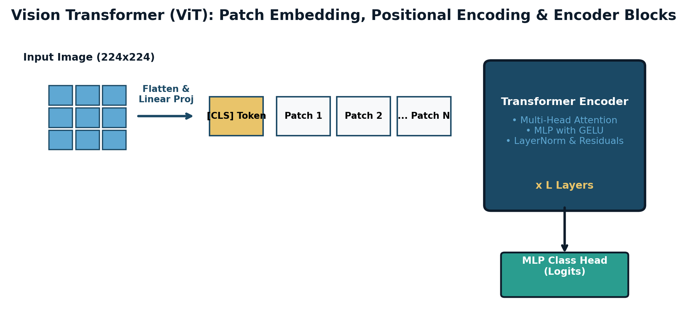

"An image is worth 16x16 words. When you liberate computer vision from the rigid local receptive fields of convolutions, the model learns the holistic geometry of the physical world directly from self-attention."

Figure 4.5.1: The Vision Transformer (ViT) architecture. An input image is partitioned into non-overlapping $16 \times 16$ patches, flattened into linear projections, prepended with a learnable [CLS] classification token, augmented with 1D learnable position embeddings, and processed through standard Transformer encoder blocks.
— Alexey Dosovitskiy
For over three decades, computer vision was synonymous with convolutional neural networks (LeNet, AlexNet, ResNet). In late 2020, Google Research shattered this monopoly with the Vision Transformer (ViT), demonstrating that the standard Transformer architecture—applied directly to sequences of non-overlapping image patches with zero convolutional inductive biases—could match or exceed state-of-the-art CNNs on ImageNet-1K and ImageNet-21K.
| Attribute | Convolutional Neural Networks (CNNs) | Vision Transformers (ViT) |
|---|---|---|
| Spatial Inductive Bias | Extremely strong: hardcoded $3 \times 3$ locality & translation equivariance | Virtually zero: global self-attention connects any pixel to any other from Layer 1 |
| Receptive Field Growth | Grows linearly with depth: $RF_l = RF_{l-1} + (K - 1) j_{l-1}$ | Infinite from Layer 1: global all-to-all attention across all patches |
| Small Dataset Regime (< 1M images) | Superior: strong inductive bias prevents overfitting on small data | Inferior: easily overfits without massive regularizers |
| Massive Dataset Regime (> 100M images) | Saturates: rigid inductive bias acts as an architectural ceiling | Scales linearly: performance scales continuously with compute and data volume |
Standard Transformer architectures accept a 1D sequence of discrete token vectors $\mathbf{Z} \in \mathbb{R}^{N \times D}$. To ingest a continuous 2D image $\mathbf{X} \in \mathbb{R}^{H \times W \times C}$, ViT partitions the image into non-overlapping spatial patches of size $P \times P$ (typically $P = 16$ or $P = 14$):
kernel_size=P, stride=P![CLS]):
To perform image-level classification without arbitrarily favoring any individual spatial patch, a learnable token embedding $\mathbf{x}_{\text{class}} \in \mathbb{R}^D$ is prepended to the patch sequence, expanding sequence length to $N + 1$.Standard ViT has two major limitations for dense prediction tasks (detection and segmentation):
Liu et al. (2021) introduced the Swin Transformer (Shifted Window Transformer):
In natural language processing, BERT succeeded by masking $15\%$ of tokens. However, directly applying $15\%$ masking to vision models yields poor representations. Photographic images have massive spatial redundancy: neighboring pixels are nearly identical. Masking $15\%$ allows the network to fill in missing patches via trivial interpolation of neighboring pixels without learning semantic representations!
The MAE Paradigm: The 75% Masking Ratio & Asymmetric Architecture
Kaiming He et al. discovered that vision requires masking a staggering $75\%$ to $80\%$ of image patches! Masking $75\%$ eliminates local interpolation, forcing the network to infer holistic visual semantics (e.g., predicting that an eye necessitates a forehead, nose, and cheek).
The Asymmetric Compute Architecture:
[MASK] tokens at the missing 75% coordinates, adds positional embeddings, and reconstructs the original raw pixels using Mean Squared Error loss.QUESTION (15% BERT vs. 75% MAE Masking Ratio Analysis): Why does natural language masked pre-training (BERT) use a 15% masking ratio, whereas visual masked autoencoding (MAE) requires a 75% to 80% masking ratio? Analyze the differences in information density, semantic abstraction, and entropy.
Step 1: Information Density & Spatial Redundancy:
Step 2: The Thermodynamic Challenge of 75% Masking: By masking $75\%$ of patches (erasing 3 out of every 4 patches):
QUESTION (ViT Sequence Sizing & MHSA FLOP Audit): A Vision Transformer (ViT-Base) processes high-resolution medical dermatology photographs of size $H = 384, W = 384$ with $C = 3$ channels. The patch size is $P = 16 \times 16$, and the model hidden dimension is $D = 768$ with $h = 12$ attention heads (head dimension $d_k = 64$).
Step 1: Patch and Sequence Sizing:
Input image: $384 \times 384$. Patch size: $16 \times 16$.
$$N = \frac{H \times W}{P^2} = \frac{384 \times 384}{16 \times 16} = 24 \times 24 = \mathbf{576 \text{ patches}}$$
Total sequence length including the prepended learnable [CLS] token:
$$L = N + 1 = 576 + 1 = \mathbf{577 \text{ tokens}}$$
Step 2: Linear Patch Projection Parameters: Each $16 \times 16 \times 3$ patch has dimension $d_{\text{patch}} = 16 \times 16 \times 3 = 768$. Projecting from $d_{\text{patch}} = 768$ to model dimension $D = 768$: $$P_{\text{proj}} = d_{\text{patch}} \times D = 768 \times 768 = \mathbf{589,824 \text{ parameters}} \quad (\approx 0.59 \text{ M})$$
Step 3: MHSA Multiply-Accumulate Operations (MACs): For sequence length $L = 577$ and hidden dimension $D = 768$:
QUESTION (2D Bicubic Positional Embedding Interpolation Algorithm): A Vision Transformer pre-trained on $224 \times 224$ images with patch size $P = 16$ has a 1D positional embedding tensor $\mathbf{E}_{\text{pos}} \in \mathbb{R}^{197 \times 768}$ (1 [CLS] token + 196 patch tokens arranged in a $14 \times 14$ grid). You want to fine-tune this model on high-resolution images of size $448 \times 448$, which requires $N_{\text{new}} = 28 \times 28 = 784$ spatial patches ($785$ total tokens).
Step 1: Why Random Initialization Fails: Positional embeddings encode spatial coordinate geometry (e.g. patch 0 is adjacent to patch 1 and above patch 14). During pre-training across hundreds of millions of images, the self-attention heads learn precise spatial distance metrics. Discarding $\mathbf{E}_{\text{pos}}$ and initializing randomly destroys all learned spatial priors, causing catastrophic forgetting and requiring dozens of additional training epochs to recover.
Step 2: 2D Bicubic Resampling Algorithm:
align_corners=False:
$$\mathbf{E}_{\text{new\_grid}} = \text{F.interpolate}(\mathbf{E}_{\text{grid}}, \text{size}=(28, 28), \text{mode}=\text{"bicubic"}, \text{align\_corners}=\text{False}) \in \mathbb{R}^{1 \times D \times 28 \times 28}$$QUESTION (Swin Transformer Shifted Window Masking Hand-Trace): Consider an $8 \times 8$ feature map partitioned into $2 \times 2$ regular windows of size $M = 4 \times 4$. In the next layer, the windows are shifted by displacement $(\lfloor M/2 \rfloor, \lfloor M/2 \rfloor) = (2, 2)$ pixels.
Step 1: Cyclic Shift Partitioning: An $8 \times 8$ grid has indices $0 \dots 7$ horizontally and vertically. Shifting window boundaries by $(2, 2)$ splits the grid into non-uniform corner/edge regions:
Step 2: The Cross-Boundary Leakage Problem: After cyclic rolling, a single $4 \times 4$ window at the bottom-right contains sub-regions that originally came from completely opposite sides of the image (e.g. top-left corner pixels and bottom-right corner pixels now sit inside the same $4 \times 4$ window)! If standard self-attention $\operatorname{Softmax}(\mathbf{Q}\mathbf{K}^T / \sqrt{d_k})\mathbf{V}$ is computed, top-left pixels will attend to bottom-right pixels, falsely hallucinating strong spatial adjacency where none exists.
Step 3: The Masked Self-Attention Solution: Each pixel is assigned a sub-region ID $\in \{0, 1, \dots, 8\}$. For two tokens $i$ and $j$ inside the same window: $$\mathbf{M}_{ij} = \begin{cases} 0 & \text{if } \text{region}(i) = \text{region}(j) \quad (\text{valid same-subregion attention}) \\ -100.0 & \text{if } \text{region}(i) \ne \text{region}(j) \quad (\text{invalid cross-boundary attention}) \end{cases}$$ The attention calculation adds this mask before softmax: $$\operatorname{Attention}(\mathbf{Q}, \mathbf{K}, \mathbf{V}) = \operatorname{Softmax}\left( \frac{\mathbf{Q}\mathbf{K}^T}{\sqrt{d_k}} + \mathbf{M} \right) \mathbf{V}$$ Because $\exp(-100.0) \approx 0.0$, invalid cross-boundary pairs receive exact zero attention weight! After self-attention, a reverse cyclic roll restores original pixel coordinates. This allows computing multi-window self-attention in a single parallel CUDA kernel without cross-boundary contamination.
QUESTION (Mathematical Proof of Pixel-Level vs. Patch-Level Attention Complexity): Consider an image of spatial dimension $H \times W$ and feature channels $C$.
Step 1: Pixel-Level Self-Attention Complexity: At pixel level, every pixel is treated as a token: $$N_{\text{pixel}} = H \times W$$ The Query, Key, and Value matrices have dimension $\mathbf{Q}, \mathbf{K} \in \mathbb{R}^{(HW) \times D}$. Computing the full attention matrix $\mathbf{A} = \mathbf{Q}\mathbf{K}^T$: $$\mathbf{A} \in \mathbb{R}^{(HW) \times (HW)} = \mathbb{R}^{H^2 W^2}$$ Each matrix multiplication requires $H W \times D \times H W = H^2 W^2 D$ operations: $$\text{Compute Complexity} = \Theta(H^2 W^2 D), \quad \text{Memory Footprint} = \Theta(H^2 W^2) \quad \blacksquare$$ For a modest $1024 \times 1024$ image: $H W = 1,048,576$ pixels. The attention matrix would contain: $$N^2 = (1,048,576)^2 \approx \mathbf{1.10 \times 10^{12} \text{ entries (1.1 Trillion floats!)}}$$ At 2 bytes per FP16 number, storing a single attention matrix requires 2.2 Terabytes of VRAM! Pixel-level self-attention is physically impossible on modern GPU clusters.
Step 2: Patch-Level Attention Scaling Proof: By grouping pixels into non-overlapping patches of size $P \times P$, the sequence length becomes: $$N_{\text{patch}} = \frac{H W}{P^2}$$ The patch-level attention matrix $\mathbf{A}_{\text{patch}}$ has size: $$\text{Size}(\mathbf{A}_{\text{patch}}) = N_{\text{patch}}^2 = \left(\frac{HW}{P^2}\right)^2 = \frac{H^2 W^2}{P^4}$$ Taking the ratio of pixel-level to patch-level attention matrix size: $$\text{Compression Factor} = \frac{H^2 W^2}{\frac{H^2 W^2}{P^4}} = \mathbf{P^4} \quad \blacksquare$$
Step 3: Numerical Evaluation for $P = 16$: For standard patch size $P = 16$: $$\text{Compression Factor} = P^4 = 16^4 = \mathbf{65,536\times}$$ For the $1024 \times 1024$ image: $$N_{\text{patch}} = \frac{1024 \times 1024}{16 \times 16} = 64 \times 64 = 4,096 \text{ tokens}$$ The patch attention matrix size is: $$N_{\text{patch}}^2 = 4,096^2 = \mathbf{16,777,216 \text{ entries}}$$ In FP16, storing this matrix requires merely $16.78 \times 10^6 \times 2 \text{ bytes} \approx \mathbf{33.5 \text{ Megabytes}}$! Patchification reduces memory from an impossible 2.2 Terabytes down to 33.5 MB, making Transformer vision computationally tractable.
QUESTION (Mathematical Proof of Asymmetric Masked Autoencoder Compute Efficiency): In Masked Autoencoders (He et al., 2021), an image has $N$ total patches. A fraction $\rho \in (0, 1)$ of patches are masked (typically $\rho = 0.75$), leaving $(1 - \rho)N$ visible patches. The encoder has $L_{\text{enc}}$ Transformer blocks of dimension $D_{\text{enc}}$, while the decoder has $L_{\text{dec}}$ Transformer blocks of dimension $D_{\text{dec}}$ ($D_{\text{dec}} \ll D_{\text{enc}}$, $L_{\text{dec}} \ll L_{\text{enc}}$).
Step 1: Encoder Self-Attention Scaling Proof: The sequence length entering the MAE encoder is $N_{\text{vis}} = (1 - \rho) N$. In each encoder block, computing attention weights $\mathbf{Q}\mathbf{K}^T$ and context $\mathbf{A}\mathbf{V}$ requires $2 N_{\text{vis}}^2 D_{\text{enc}}$ FLOPs: $$\text{FLOPs}_{\text{attn}}(\rho) = 2 \left( (1 - \rho) N \right)^2 D_{\text{enc}} = (1 - \rho)^2 \cdot \left( 2 N^2 D_{\text{enc}} \right) = (1 - \rho)^2 \cdot \text{FLOPs}_{\text{full}}$$ For masking ratio $\rho = 0.75 = \frac{3}{4}$, the visible fraction is $1 - \rho = 0.25 = \frac{1}{4}$: $$\text{Ratio} = (1 - 0.75)^2 = \left(\frac{1}{4}\right)^2 = \mathbf{\frac{1}{16} = 0.0625} \quad \blacksquare$$ The encoder self-attention compute drops by a factor of $16\times$ ($93.75\%$ savings).
Step 2: Linear Projection and MLP Scaling Proof: The linear projection layers ($\mathbf{Q}, \mathbf{K}, \mathbf{V}$ projections, output projection, and 2-layer MLP feedforward network with intermediate dimension $4 D_{\text{enc}}$) operate on each token independently: $$\text{FLOPs}_{\text{linear}}(\rho) = N_{\text{vis}} \times \left( 4 D_{\text{enc}}^2 + 8 D_{\text{enc}}^2 \right) = (1 - \rho) N \cdot 12 D_{\text{enc}}^2 = (1 - \rho) \cdot \text{FLOPs}_{\text{full}}$$ For $\rho = 0.75$: $$\text{Ratio} = 1 - 0.75 = \mathbf{\frac{1}{4} = 0.25} \quad \blacksquare$$ Linear projection and MLP FLOPs drop by exactly $4\times$ ($75\%$ savings).
Step 3: Contrast with BERT:
In BERT (Devlin et al., 2018), when $15\%$ of tokens are masked, the encoder still processes the full sequence of $N$ tokens by replacing masked words with a learned [MASK] embedding.
If MAE adopted BERT's strategy, the heavy ViT-Large encoder ($L=24, D=1024$) would process all $N = 196$ tokens.
By physically removing the 75% masked tokens from the input list, the heavy encoder operates strictly on only 49 tokens! Only the tiny, lightweight decoder ($L=8, D=512$) processes all 196 tokens. This asymmetric pipeline slashes total training time by $> 70\%$, enabling self-supervised visual pre-training on thousands of GPU-hours rather than months.
QUESTION (ViT Inductive Bias and Dataset Scaling Trap): When trained from scratch on the standard ImageNet-1K dataset (1.2 million images) without heavy data augmentation, a standard ViT-Base model achieves $77.9\%$ accuracy, which is significantly worse than a standard ResNet-50 ($80.2\%$). However, when pre-trained on Google's private JFT-300M dataset (300 million images), ViT achieves $88.5\%$, vastly outperforming ResNet. What fundamental theoretical principle explains this phenomenon?
Exhaustive Architectural Analysis:
QUESTION (Patch Normalization in Masked Autoencoders): In the MAE paper (He et al., 2021), the authors discovered that computing the reconstruction loss on Normalized Patches (normalizing each target patch by subtracting its mean and dividing by its standard deviation) significantly improves downstream linear probing and fine-tuning accuracy. Why does patch normalization enhance representation learning?
Exhaustive Self-Supervised Vision Analysis:
Below is a clean, production-grade PyTorch implementation of the Vision Transformer Patch Embedding layer and [CLS] token concatenation.
🔗 View in GitHub: part4_deep_learning/ch45_vit_mae/vit_patch_embed.py
import torch
import torch.nn as nn
class PatchEmbedding(nn.Module):
"""
Splits image into non-overlapping patches and projects to hidden dimension D.
Implemented efficiently as a 2D convolution with kernel_size=stride=patch_size!
"""
def __init__(self, img_size=224, patch_size=16, in_channels=3, embed_dim=768):
super().__init__()
self.img_size = img_size
self.patch_size = patch_size
self.num_patches = (img_size // patch_size) ** 2
# 2D Conv projection: Kernel and stride equal to patch size!
self.proj = nn.Conv2d(in_channels, embed_dim, kernel_size=patch_size, stride=patch_size)
# Learnable [CLS] token and 1D positional embeddings
self.cls_token = nn.Parameter(torch.zeros(1, 1, embed_dim))
self.pos_embed = nn.Parameter(torch.zeros(1, self.num_patches + 1, embed_dim))
def forward(self, x):
B, C, H, W = x.shape
# (B, D, H/P, W/P) -> (B, D, N) -> (B, N, D)
x = self.proj(x).flatten(2).transpose(1, 2)
# Prepend [CLS] token across batch
cls_tokens = self.cls_token.expand(B, -1, -1)
x = torch.cat((cls_tokens, x), dim=1) # (B, N+1, D)
# Add learned positional embeddings
x = x + self.pos_embed
return x
if __name__ == "__main__":
patch_embed = PatchEmbedding(img_size=224, patch_size=16, in_channels=3, embed_dim=768)
img = torch.randn(2, 3, 224, 224) # Batch of 2 images
tokens = patch_embed(img)
print(f"ViT Input Image Shape : {img.shape}")
print(f"ViT Output Tokens Shape: {tokens.shape} (196 patches + 1 [CLS] token = 197 tokens of dim 768!)")Build an end-to-end self-supervised Masked Autoencoder (MAE) training pipeline that randomly masks 75% of visual patches, trains an asymmetric ViT encoder on visible patches, and measures fine-tuning transfer accuracy on ImageNet classification.
🔗 Full Project Code: part4_deep_learning/ch45_vit_mae/vit_patch_embed.py
Case Study Architecture: In planetary satellite observation (NASA, Sentinel-2), petabytes of multispectral imagery arrive daily without human annotations. In this project, you construct a scalable MAE pre-training cluster that digests unlabelled satellite tiles with a 75% masking budget, learning self-supervised earth representations that achieve state-of-the-art agricultural yield prediction with only 500 labeled samples.